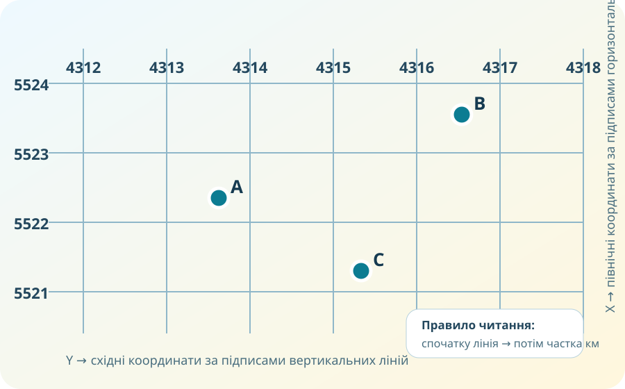

Одна точка — дві адреси
Проблема: рятувальники отримали два записи про той самий об’єкт. В одному — 50.4501° N, 30.5234° E. В іншому — пара чисел X і Y у метрах. Обидва записи можуть бути правильними.
Що зміниться, якщо ми перейдемо з глобальної системи широти/довготи до плоскої координатної сітки карти?
Лабораторія 1. Знайдіть точку на реальній карті
Не публікуйте в спільному чаті точні координати власного житла. Для вправи можна взяти школу, площу, вокзал або інший публічний об’єкт.
Лабораторія 2. Прямокутна сітка

Мінісимулятор: градуси — це не метри
Запис у градусах:
Запис у градусах:
Пересувайте повзунки. Ви змінюєте кутове положення точки. Щоб отримати X/Y у метрах, потрібне математичне перетворення до конкретної проекції та системи координат — одного множення «на число» недостатньо.
Місія: координати для реальної задачі
Ви надсилаєте місце зустрічі людині в іншій країні. Які координати практичніше передати — широту/довготу чи X/Y локальної топокарти? Обґрунтуйте.
Команда працює з одним аркушем карти й кілометровою сіткою. Чому X/Y можуть бути зручнішими для вимірювання відстаней?
Двоє учасників отримали різні X/Y для тієї самої GPS-точки. Назвіть щонайменше дві причини, які треба перевірити до висновку «хтось помилився».
Теорія після діяльності
Широта φ і довгота λ — кутові величини. Широта відлічується від екватора, довгота — від початкового меридіана.
X і Y задають положення точки на площині в обраній координатній системі. Одиниці зазвичай лінійні — метри.
Дає змогу швидко визначати квадрат, координати, напрям і приблизні відстані без повторного вимірювання лінійкою від рамки карти.
Числа мають сенс лише разом із системою відліку, проекцією та параметрами карти. Тому GIS завжди зберігає не тільки координати, а й інформацію про CRS.
CER: яка координатна система «краща»?
Для якої задачі Ви обираєте географічні координати, а для якої — прямокутні?
Наведіть мінімум два докази з OSM, кілометрової сітки або властивостей систем координат.
Поясніть, як мета роботи визначає вибір координатної системи.
Домашнє завдання
- Опрацювати §10 підручника Гільберг Т. Г., Довгань А. І., Савчук І. Г., 8 клас (2025).
- Відкрити OpenStreetMap і знайти публічний об’єкт у своєму населеному пункті. Записати його широту й довготу та пояснити точність запису.
- У 3–4 реченнях: чому X/Y без назви системи координат недостатньо для однозначного обміну геоданими?
Вхід до тесту
Тест відкриється після введення даних учня.
Що використано
- OpenStreetMap — реальна онлайн-карта та геодані.
- Локальний навчальний asset — модель кілометрової координатної сітки.
- КТП 8 класу: §10, ГР2, робота з онлайн-картами та системами координат.